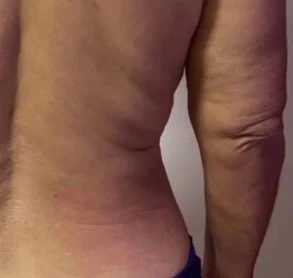
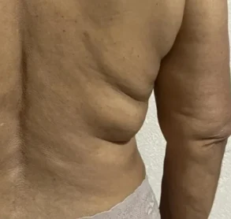
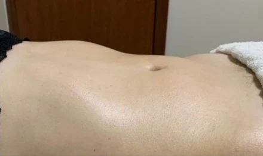
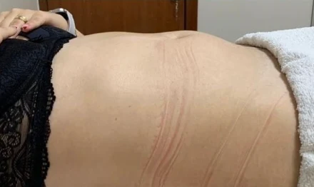
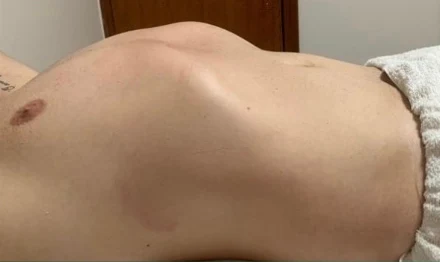
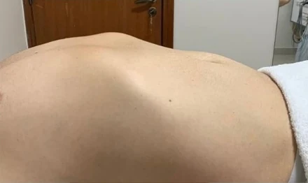

Limpeza de pele
Higienização facial para quem quer retomar ou complementar a rotina de cuidados com a pele.
Consultar pelo WhatsAppClínica Amapelle · Luziânia, GO
Da limpeza de pele aos cuidados corporais, conheça as opções da Amapelle e agende seu atendimento no centro de Luziânia.
Escolha uma categoria para conhecer os tratamentos. Para saber a duração da sessão ou tirar dúvidas, fale com a clínica pelo WhatsApp.
Conheça opções para sua rotina de pele, de limpeza facial a cuidados com acne, textura e manchas.
Higienização facial para quem quer retomar ou complementar a rotina de cuidados com a pele.
Consultar pelo WhatsAppUma opção para conversar com a clínica sobre textura e marcas na pele.
Consultar pelo WhatsAppEsfoliação facial com agente químico, escolhida conforme a avaliação da pele.
Consultar pelo WhatsAppAtendimento para avaliar acne, marcas e manchas e conversar sobre os cuidados indicados para sua pele.
Consultar pelo WhatsAppExplore massagens, depilação a laser e protocolos corporais. A clínica orienta a escolha conforme seu objetivo.
Protocolos escolhidos após avaliação para quem busca cuidados com o contorno corporal, a celulite ou o pós-parto.
Consultar pelo WhatsAppMassagem com movimentos suaves. Consulte a clínica para saber quando a técnica é indicada.
Consultar pelo WhatsAppUma sessão para desacelerar e dedicar um tempo ao relaxamento.
Consultar pelo WhatsAppConverse com a clínica sobre as áreas que você quer tratar e como funciona o atendimento.
Consultar pelo WhatsAppVeja quais tecnologias a Amapelle utiliza e converse com a clínica sobre como elas entram no seu plano de cuidado.
Tecnologia que usa resfriamento controlado em áreas avaliadas pela clínica.
Consultar pelo WhatsAppAplicação de energia de radiofrequência em protocolos de cuidado com a pele.
Consultar pelo WhatsAppTecnologia com ondas ultrassônicas usada em protocolos corporais.
Consultar pelo WhatsAppConverse com a clínica para entender como a técnica pode ser usada em protocolos corporais.
Consultar pelo WhatsAppOpção para avaliar com a clínica em cuidados voltados à gordura localizada.
Consultar pelo WhatsAppAplicação de estímulos elétricos em protocolos corporais, conforme avaliação.
Consultar pelo WhatsAppVeja a fachada e as salas de atendimento. Toque em uma foto para ampliar.
Ver endereçoArraste o controle na foto para comparar cada caso. Os resultados variam de pessoa para pessoa.


AntesDepois

AntesDepois

AntesDepoisVeja como clientes descrevem o atendimento e o espaço da clínica.
★★★★★“Atendimento maravilhoso, ambiente acolhedor”
★★★★★“Aconchegante e ótimas profissionais.”
★★★★★“espaço aconchegante,profissionais capacitados e educados”
Trechos consultados no Telu, que os atribui ao Google.
A sensibilidade depende da pessoa, da área e do procedimento. Converse com a clínica sobre o que esperar na sua sessão.
O tempo e os cuidados variam conforme o procedimento. Confirme as orientações antes de organizar sua rotina.
O prazo varia conforme o procedimento e a resposta individual. A clínica pode esclarecer o que observar no seu caso.
A indicação depende da sua avaliação. Informe à clínica sobre condições de saúde, medicamentos e procedimentos recentes.
A quantidade é definida conforme a avaliação e o plano de atendimento.
Abra o WhatsApp da clínica para consultar horários e tirar dúvidas.
Conheça o trabalho da clínica em dois vídeos curtos.